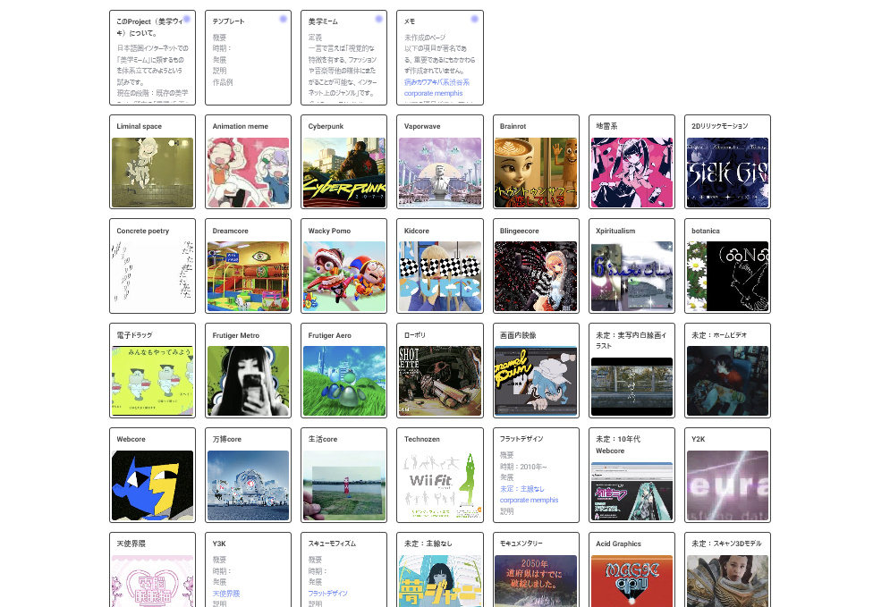

美学ウィキというCosenseプロジェクトを作りました
hazuqu

日本語圏インターネットでの「美学ミーム」に類するものを体系立ててみようという試みです。
これはなに？
ここです。美学ウィキ
プロジェクト内にプロジェクトの説明と、美学ミームそのものの簡単な説明のページがピン留めされています。
簡単に説明すると、インターネット美学ミームというものがありまして、Vaporwaveとか、Backroomsとか、Webcoreとか、どこかで聞いたけれど今一つ雰囲気だけわかるようなものたちを指します。
現在こういったものの情報を探るには、英語圏のWikiとNote.comやYoutube等に点在する意訳や研究のみで、それらの集約とシンプルな説明ができたらと考えました。
また、
・英語圏の美学において国内の動向とは違った、または包括ジャンルを一絡げにしたものもあること、
・国内で「美学ミーム」の主流とはずれるものの緩やかな文化的合意と視覚的特徴を有するジャンル（多くの場合「～界隈」や「～系」）や、視覚的な同一性についてカテゴライズを試みてみたいこと、
等を理由に、既存の美学ミームの外側も流動的に残そうとも考えています。
どうやって使うの？
基本的にはリンクを辿っていくことで似ているジャンルや発展の系譜を見ることができます。また、「このProject（美学ウィキ）について。」の下部にある通り記事作成のために編集者のメンバーリンクを用意していますので、気楽に連絡して編集できます。
問題はあるの？
かなり。私が観測できる範囲には限りがあり、かといって先行の情報源も個人ブログや出典のないWikiだったりしますし、そもそも美学ミームという物自体が離散的でふわふわしています。そこでこのプロジェクトでは敢えて肌感で書くことに制限を設けていません。もちろん出典リンクを置く場所は用意されていますが、それを必須としていません。
多くの方に文句をつけてもらうことで、徐々に美学ミームの流れと並走できることを期待しています。
個人的な話
かなり昔から各種SNSの消費に注力する時間を設けているインプット目的ではなく、そのコミュニティの熱心なファンとして振る舞う趣味です）のですが、最近は仕事でも趣味でも美学ミームやインターネットミームの話題が増え、この趣味が功を奏するタイミングが多くなっていました。その集約として始めたものです。正直なところ、私が美学ミームについてどこまで知っているのか指標すらなくて……私の知っている範疇をあらかた書き終えたタイミングでお出ししましたので、もし頓珍漢なことを書いていたら是非叱ってほしいです。
♥
⤴